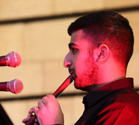
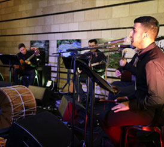

הרכב "כורדי ירושלמי" מתמחה במוזיקה מהמרחב הכורדי, פעיל כ- 4 שנים בהנהגתו של יניב עובדיה ובניצוחו המוזיקלי של אליהו דגמי.
ההרכב מונה 5 אומנים ירושלמים ומשלב טקסטים מארמית, קרמנג'ית ופיוטים בעברית, במקאמים הכורדים האופייניים (חוסייני, אספהאן).
הסאזים הטורקיים, החלילים, יחד עם הבס, תופים ובשילוב השירה המסורתית יוצר אווירה אותנטית סוחפת.